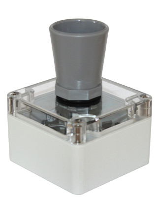

Quick Start Guide¶
Introduction¶
If you have a pre-programmed Riverlabs logger, then it is ready to use out of the box. However, if you need to change any of the settings then you will need to reprogram the logger. A common setting to change is the frequency of measurement. Our pre-programmed loggers typically measure at a 5 minute or 15 minute interval. This is suitable for many use cases, but you may wish to set it lower or higher.
If you are using telemetry and not using the Riverlabs data plaform, then you may need to reprogram the logger to set settings such as the internet address of your data platform, and the authentication credentials of the device.
You may also need to reprogram the logger if the clock has lost the time because the backup coin battery has been removed or has run out. Note that loggers with cellular connection set the time automatically by querying an internet time server and no manual setting is needed. However, for SD-card based loggers it is crucial that the correct time is set using an Arduino sketch.
Although programming a data logger may sound daunting, the Programming manual guides you through the entire process. We have also written the code in such a way that the most common settings are available at the top of the main sketch and can be set without altering the rest of the code. If you are familiar with Arduino, then the short guide will set you on your way.
This quick-start guide assumes that the logger is correctly programmed.
1. Identify Your Logger¶
First, identify which logger model you have. We have produced many different iteration since we started development, but the last few years we've consolidated the design around our Rio platform, which is quite stable. In the future, we aim to account for any hardware changes in the software, such that we can use a single unified code base.
The main difference between the models is the attached sensor. We mostly use distance sensors to measure water level, such as the maxbotix ultrasound sensor, and the Garmin lidar rangefinder. A comparison between those sensors is provided below. More recently, we have also developed models for soil moisture sensors, rain gauges, and certain water quality parameters.
Another main difference is data handling. Our loggers allow either local data storage on an SD card, or telemetry. While it would be great to do both, unfortunately the processor we use does not have sufficient internal memory to contain the software for both operations. We hope to move to a more modern architecture that will make this possible. In the meanwhile, you will have to settle for one or the other.
-
Wari Ultrasound Logger

Sensor: Maxbotix MB7389
Range: 0.3 m–5 m
Resolution: 1 mm
Beam angle: Wide (~15°)
Best for:- Water level monitoring
- Shorter-range applications
- Vertical mounting positions
-
Wari Lidar Logger

Sensor: Garmin Lidarlite v3HP
Range: 0.05 m–35 m
Resolution: 1 cm
Beam angle: Very narrow (~0.5°)
Best for:- Long-range measurements
- Lower accuracy than ultrasound (1 - 10 cm)
- Difficult mounting situations (it allows for angled installations up to 40° from the vertical)
2. Batteries¶
The wari loggers use two batteries: a large lithium-ion battery that provides the main power, and a small coin battery at the back of the circuit board. The coin cell is typically already installed and should not removed or the clock will lose track of time.
Depending on the logger model, the main battery has either a large 18650 size or a smaller 14500 size (see the Battery & Power Guide). Note that 14500 is very similar in size to an AA battery. However, a normal AA battery will not work as that only provides 1.5V. The logger operates on 3.3V, which requires a lithium battery.
Check Polarity Carefully!
Double-check battery orientation before insertion. Match the + and - markings on the battery with the markings in the battery compartment. The logger may be damaged if the battery is inserted wrongly.
Main Battery (usually a 18650 or 14500 size):
- Switch off the board
- Check you have the right battery
- Verify the polarity (+/-) and charge
- Insert the battery, ensuring the metal clips touch the battery. If they do not touch, then remove the battery and bend the clips slightly and carefully inwards.
RTC Battery (CR1220):
Date Preservation
The coin cell may already be installed, and typically lasts several years. If you need to replace, it then keep keep the main battery inserted so it can provide power to the clock and preserve the time. If the clock has reset, then it needs to be set again using the right Arduino sketch.
- Switch off the board
- Unscrew the circuit board, and locate the small coin battery slot on the back
- Insert the CR1220 battery (typically + side up)
- Press firmly until it clicks into place
- If applicable, screw the circuit board back into the enclosure
For more details on battery options and operation, see the Battery & Power Guide
3. SD Card Operation¶
If the logger is programmed to write data to the SD card, then a microSD card needs to be inserted in the slot. Depending on the model, the contacts of the card should face either outward or inward. Refer to the photos for specific guidance.
When the logger starts up or is reset, the code will look for an SD card. If the card is not found, then the red LED will flash 3 x 3 times. If this happens, double check that it is properly inserted. If the LED lights up a single time, then the card is found and ready to use.
Buffering SD card writes
To preserve energy and minimize wear on the SD card, new data are not written to the card immediately. Instead, they are stored in an internal EEPROM memory chip, and only written at regular intervals (typically once day). This means that if you take out the SD card and read it out, up to 24h of data may be missing. To avoid this, press the reset button before taking out the SD card. When the logger starts up or is reset, it will look for unflushed data in the memory chip and flush them to the SD card. During the writing process, the LED will light up. This can take up to 20 seconds.
Do not remove the SD card while data are being written
Do not take out the SD card while the LED lights up and the writing process is ongoing. This may result in data loss and damage the SD card. Wait until the red LED is off.
For more details on reading out data and file formats, see the Data Download Guide
4. Telemetry¶
Alternatively, data may be sent via telemetry. Currently, our loggers support two technologies: LoRa/LoRaWAN and cellular transmission. These may need additional components. For LoRaWAN, the board needs to have an appropriate radio module soldered on. Cellular connectivity uses a separate DIGI modem that can be inserted in the dedicated slot (if the pin headers have been soldered on). Both technologies also need an appropriate antenna. Cellular telemetry consumes substantial energy so you will typically also need a solar panel, or the battery will discharge very quickly.
LoRa/LoRaWAN¶
To use LoRa/LoRaWAN, flash the correct Arduino sketch (see the Programming manual). If the logger has been preconfigured for LoRaWAN, then you should have received the DevEUI of the device. You can use this to register the device in a LoRaWAN application such as The Things Network. In that case, no further programming is needed.
Cellular connectivity¶
Cellular connectivity requires a modem, such as the Digi XBee 3 Global LTE Cat 1 and a SIM card. If you use Imperial's data management platform, then the logger may already be preconfigured. Otherwise, you will need to reprogram the logger to set settings such as the data platform's internet address, the logger credentials, the APN of the SIM card, and other details of the connection process. These are all explained in detail in the Telemetry Guide.
Telemetry frequency
The LoRaWAN sketch will send data on every measurement. However, to save battery, the cellular sketch will store data internally and only send a certain intervals. Typically, our loggers are programmed to take measurements every 5 minutes, and send them at the hour. You can set different frequencies in the Arduino sketch, but be aware that very frequent telemetry events may require a bigger solar panel.
5. Test Before Deployment¶
Before taking your logger to the field, it is useful to perform a bench test:
- Sensor reconnected (Matbotix 3-pin connector plugged in)
- Power switch in ON position
- Verify LED flashes during measurements
- Check that data is being written to SD card or sent via telemetry
- Confirm that the sensor readings are reasonable
- Test for at least 30 minutes to ensure stable operation
See the First Deployment Checklist for comprehensive pre-deployment testing.
Ready to Deploy?
Once you've completed these steps and verified operation, your logger is ready for field deployment. Remember to document your installation location and take photos for future reference!
6. Field installation¶
Your logger is now ready for field deployment! See the Mounting Guide for detailed installation instructions including:
- Mounting the sensor
- Sensor positioning and orientation
- Environmental considerations
7. Useful resources¶
- First Deployment Checklist
- Installation manual
- Set up your own telemetry platform
- Understand battery and power characteristics
8. Need Help?¶
- Check Common Issues and Solutions for quick solutions
- Review Diagnostic Flowcharts for systematic troubleshooting
- Contact support: info@riverlabs.uk